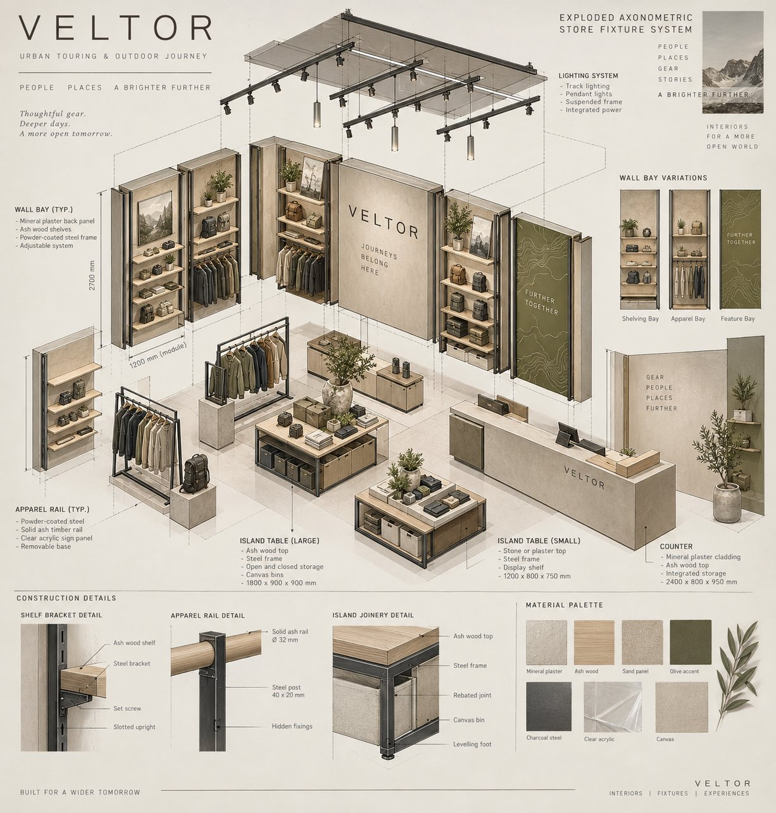
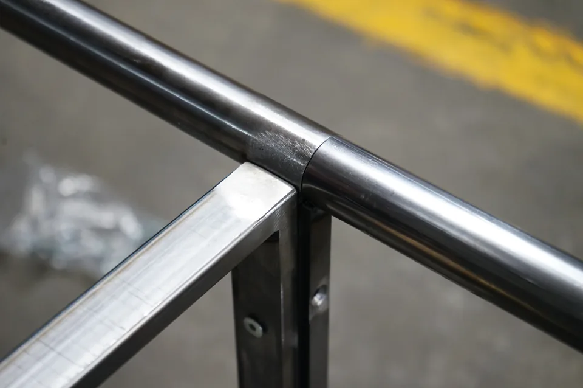
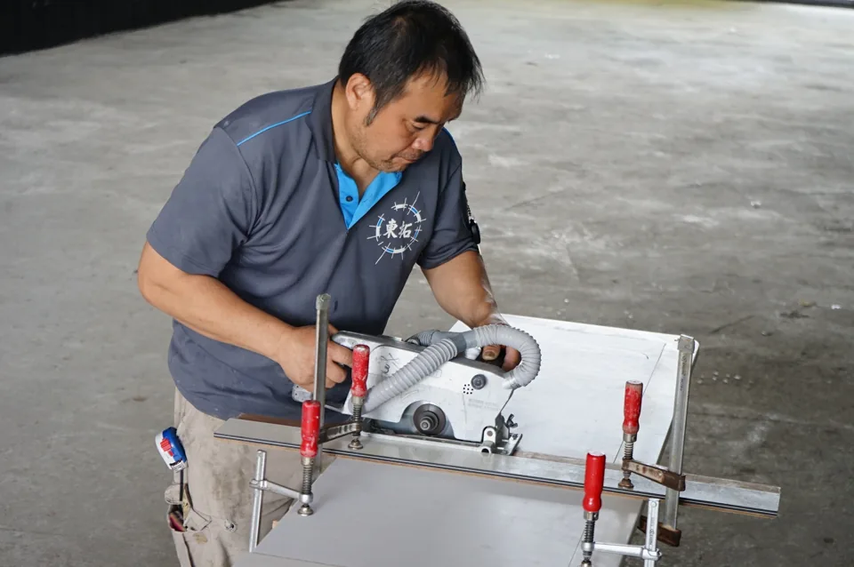
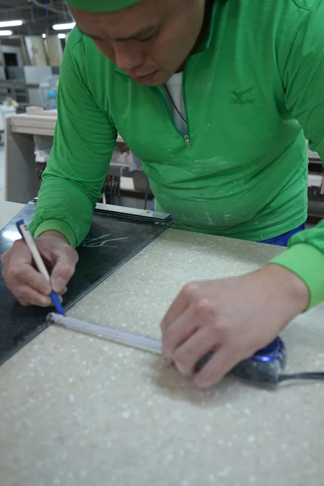

異素材を一つの窓口で
材料、接合、仕上げの条件を、製作工程に合わせて検討します。
BIG FAME IND. CORP. / TAIPEI · 1988
台湾で38年。金属・木工・アクリルの組み合わせから、図面・試作・組立・輸出梱包まで、一つの窓口で調整します。

01 / ENGINEERING
材料、接合、仕上げの条件を、製作工程に合わせて検討します。
重要な寸法・使用条件を整理し、試作で確認すべき点を明確にします。
現場での組立手順と輸送条件を、設計段階から確認します。
CONCEPT ARCHIVE

VELTOR / SELF-DEVELOPED CONCEPT
配置、棚、支柱、接合と異素材の組み合わせを検討するための自社概念モデルです。実案件の納品実績とは区別しています。
自社コンセプトを見る ↗WORKSHOP ARCHIVE



製作現場の記録写真（2016–2019年）。写真は特定案件の性能・認証を保証するものではありません。
04 / PROCESS
用途、商品、数量、希望時期、納品地をお知らせください。
材質、接合、重要寸法、荷重、仕上げと担当範囲を確認します。
必要なサンプルと検証項目を決め、承認仕様を整理します。
数量、品質確認、組立、梱包、輸送の条件を合わせます。